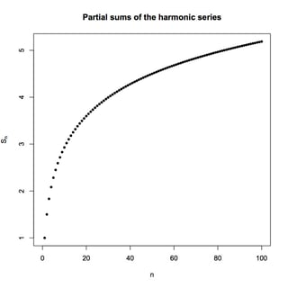

The Endless Sum
Group: Jiakhai’s Island
Authors: Lim Jia Khai, Lee Shuan Fung, Khoo Sue Ling
1 Part I: The Basic Series
Before we explore why infinite series can behave so strangely, we need to understand some basic idea of a series.
Let’s us strart with a simple sequence of numbers, which is a list of numbers that follow the order. For an example,
\[ \{a_n\} = \{1,2,3,4,...,k,....\}\]
1st term is 1, 2nd term is 2， 3rd term is 3 and so on
By summing up the terms to some finite number \(k\) \[1 + 2 + 3 +......+ k = \sum_{n=1}^{k} a_n \]
We get an expression with a big sum, and this is what we known as a series. At first, adding numbers seems to be easy. If we add a few numbers only, we can easily calculate them one by one. But what if we need to add 50 numbers, 100 numbers, or even \(10^10 numbers\)? Calculate it one by one would be impossible. This is why mathematicians developed formulas to calculate the sum directly. However, the formula depends on the type of sequence. Two of the most common types are arithmetic series and geometric series. As a quick reminder, an arithmetic series has a constant difference between consecutive terms, for example, 2, 5, 8, 11, …… while a geometric series has a constant ratio between consecutive terms, for example, 2, 6, 18, ……
For any positive integer \(k\) Arithmetic series: \[\sum_{n=1}^{k} n = \frac{k(k+1)}{2}\] Geometric series: \[\sum_{n=0}^{k} r^n = \frac{1-r^{k+1}}{1-r} \quad \text{for } r \neq 1\]
So far, nothing feels surprising. We’re just adding finitely many numbers. BUT, how about infinite many numbers?
Well, we have the series \(1+\frac{1}{2}+\frac{1}{4}+\frac{1}{8}+...\) What should it be? We are not going, and impossible to sum up every term in infinite series because its infinite, there’s no last term. So, we sum up first few terms of the series, which is called partial sum.
Look at the partial sum of this series we will have 1, 1.5, 1.75, 1.875, … noticed that it’s closer and closer to 2, so it must be 2 right? Since the terms of the sequence getting smaller and smaller, we can say it would goes to 0. So, we can use this fact to compute the sum together with the Geometric series.
\[ \begin{align} \lim_{k \to \infty} \sum_{n=0}^{k} \frac{1}{2^n} = \lim_{k \to \infty} \frac{1-(\frac{1}{2})^{k+1}}{1-\frac{1}{2}} \end{align} \]
\[ \begin{align} = \frac{1}{\frac{1}{2}} \end{align} \] \[ \begin{align} = 2 \end{align} \]
2 Part II : Grandi’s Series
So far so good, the partial sums approach 2, so we say the series equals 2. Infinite sums are just like finite sums? You’re about to lose that confidence, introducing a bizarre series, Grandi’s series.
Now, what is the result for \(1-1+1-1+1-1+......\)?
If we only calculated the even number of term like \(1-1+1-1\), then we will get \[ 1+(-1+1-1)=1-1=0\]
But for the odd number of term, we will have \[1-1+1-1+1=1+(-1+1-1+1)=1+0=1\]
Alright it’s strange enough, it bounced around 0 and 1 if we keep going infinitely, it never seems to settle on a single value.
There’s a famous trick that looks convincing in “solving” this series. We let the series be S, then we will have \[1-(1-1+1-1+...)=1-S\] \[1-S=S\]
\[2S=1\]
Now, do some simple algebra and we will get \(S=1/2\). The catch is that this manipulation assumes the series behaves nicely enough for these algebraic steps to be valid. We haven’t proved that yet. $ Since S is the series and we got \(S=1/2\), this means the result of the Grandi’s series is \(\frac{1}{2}\) right? But 1 and 0 doesn’t sound wrong though. So should series be 1, 0, \(\frac{1}{2}\) or any other answer that we still haven’t discover?
The answer is none of them. Infinite sums started behaving unlike finite addition huh? Well, welcome to today’s intuition breaking session. Since the partial sums oscillate forever between 1 and 0, the series diverges and doesn’t have a finite sum. But what does it mean for a series to diverge? Ok it’s time to talk about convergence of infinity series. When we say a series converges to \(x\), we mean its partial sums get closer and closer to \(x\) as we add more and more terms. And obviously, a series diverges means its partial sum doesn’t approach a number.
3 Part III : Harmonic Series
Now you might think to find out whether an infinite series converges, we can just sum up a few first terms and see whether it approaches to a finite number, right? Unfortunately, it doesn’t.
Now let’s introduce harmonic series, a harmonic series looks like \[1+\frac{1}{2}+\frac{1}{3}+...+\frac{1}{k}$ = \sum_{n=1}^{k} \frac{1}{n}\]
Does it converge or diverges?
Recall the convergent geometric series \(\frac{1}{2^n}\), where \(n>1\) we’ve mentioned above. Hmmm, the denominator keeps getting larger, the terms are getting smaller and smaller. In fact, they even go to 0. After all, geometric series converged for exactly that reason, so surely the harmonic series should converge too… right?
NAH. Euler, a genius mathematician has shown that harmonic series is divergent. He plots the graph of harmonic series ,
\[H(n)= 1+ \frac{1}{2} +.....+ \frac{1}{n}\]

then when n is bigger he has realised that the graph of \(H(n)\) is similar to the graph of \(\ln(x)\), then he has an idea, Known that when x approaching to infinity then \(\ln (x)\) is also approaching to infinity so he write down a new function
\[f(n)=H(n)-\ln(n)\]
He then realised when n is big enough then f(n) will converge to a 0.577215…. then we know that \(1+\frac{1}{2}+\frac{1}{3}+...+\frac{1}{n}\) approximate equal to \(\ln(n)+0.577215...\), from here we know that harmonic series is divergent or we can use principle of mathematical induction to show that this series is divergent.
4 Part IV: Euler And Basel Problem
Notice that we have to solve an equation we have to find the zero points. If we know a polynomial has 3 zero points, it means we can write it in the factorisation way as \((x-a)(x-b)(x-c)=0\) and we can get back the original equation. What if \((\sin(x)=0)\)? Can you do factorisation?
Obviously the answer is yes. Since we know all the zero points for \(\sin(x)\), when \(x=n\pi\) where \(n\) is an integer then \(\sin(x)=0\), so we may try to write
\[\sin(x)=\cdots(x+\pi)x(x-\pi)(x-2\pi)(x+2\pi)\cdots\]
in this way. But this factorisation is meaningless because if we let \(x\) be any other number not equal to \(n\pi\), this factorisation will diverge and therefore cannot replace \(\sin(x)\).
So can we find a way to factorise \(\sin(x)\)? This is the problem that caught the attention of Euler, the God of Mathematics. For him this was probably just another boring night, but he did not know that he was about to solve a century-old problem and change mathematics forever. From that moment he became legendary across European mathematics. So today let us see the masterpieces of Euler, Basel’s Problem.

Before Newton is born, infinite series was known as the only way to study infinity. So people at that time always thought calculus came from infinite series.
During that time, there was an Italian mathematician called Pietro Mengoli who was doing research on an infinite series \[1+\frac{1}{2^2}+\frac{1}{3^2}+...+\frac{1}{n^2}\]
However, the research methods at that time were limited, so he had to calculate the series one by one. He was very determined, and he calculated until n was more than 1000 and got the value of the infinite series approximately equal to 1.643934.
He then gave a challenge to all mathematicians. He said he had calculated this infinite series is approximately equal to 1.644934 and it will be convergent, but can anyone tell him what the exact number is? This then became a famous mathematics problem, also known as the Basel Problem.
Even Newton, Leibniz, Bernoulli and many geniuses could not solve this problem. But almost 100 years later, Euler saw the number calculated by Pietro Mengoli. He then said that this number is pi^2/6 If we use a calculator, we can see pi^2/6 which is extremely similar to the number given. However to peruse the mathematician, euler has to provide a proof for it. Remember the factorisation problem of \(\sin(x)\) that Euler solved before. Euler realized that if we can write \(\sin(x)\) as a product of its zero points, then maybe we can compare this infinite product with another form of \(\sin(x)\).
We already know that from the Taylor expansion:
\[\sin(x) = x - \frac{x^3}{3!} + \frac{x^5}{5!} - ...\]
which can also be written as:
\[\sin(x) = x(1 - \frac{x^2}{3!} + \frac{x^4}{5!} - ...)\]
On the other hand, Euler’s factorisation gives:
\[\sin(x) = x(1 - \frac{x^2}{\pi^2})(1 - \frac{x^2}{(2\pi)^2})(1 - \frac{x^2}{(3\pi)^2})...\]
Now Euler noticed something interesting. Both of them are the same sin(x), so their coefficients should also be the same.
When Euler compared the coefficient of \(x^2\), he found:
\[\frac{1}{\pi^2} + \frac{1}{(2\pi)^2} + \frac{1}{(3\pi)^2} + \cdots = \frac{1}{6}\]
Multiplying both sides by π², he finally got:
\[1 + \frac{1}{2^2} + \frac{1}{3^2} + \cdots = \frac{\pi^2}{6}\]
The Basel Problem, which had troubled mathematicians for almost a century, was finally solved.
This was not just a solution to one infinite series. Euler showed that infinity was not something impossible to control. With the right idea, even an infinite process could reveal a beautiful and exact answer.